You’re certain the price of that stock will take off—your broker says so—but you don’t want to commit all your money just yet. What are your options?
1 Introduction
You’ve just figured out that the coming olive harvest will be a bumper crop. With only a little money, how can you profit from this information? Aristotle tells the story of Thales of Miletus who, with a minor down payment, secured a limited monopoly on a large number of olive presses. When the harvest came in, he was able to rent out use of his presses at a significant profit. The wise philosopher’s maneuver is an early example of an option.
An option is the right, but not the obligation, to buy or sell a certain amount of some asset at a specific price on or before a specific date. For example, suppose you purchased an option to buy (a call option) 100 shares of XYZZY Corp. (the underlying asset) at $50 per share (the strike price) up to some time 30 days from now (the expiration). Also, suppose XYZZY is trading at $45. At any time right up to the expiration, you could buy 100 shares of XYZZY, and, no matter how high its price rises, you would pay $5000. You could also do nothing (a wise move if the price never breaks $50). You could also sell this option contract to someone else before it expires. But suppose the price per share rose to $75. If you decided to exercise your option, you would, for a $25/share discount, become the proud owner of 100 shares of XYZZY. If you then immediately sold, you would walk away with $2500, less commissions, taxes, and whatever you paid for the contract in the first place (called the premium).
Now, what is a fair premium to pay to play this game? This is hardly a trivial question, and people have spilled barrels of ink attempting to answer it and lost entire fortunes getting it wrong. The approach we’ll focus on today is the Binomial Options Pricing Model (BOPM).
Below,
- We’ll discuss the mathematics of the BOPM;
- Implement a naïve routine based on our analysis;
- Refine our analysis of the problem and use it to gain useful performance;
- Discuss the principles of dynamic programming; and,
- Use the traditional dynamic programming mindset to improve performance yet again.
2 Analysis of the BOPM
At any given time up to expiration, the value of an option is the greater of:
- the expected payoff from exercising it immediately, or,
- the expected payoff from continuing to hold it until some later time
discounted by the risk free rate (the theoretical return on an investment with no risk). At expiration, we may exercise the option or let it expire. What we choose at any given time is ultimately due to the expected behavior of the underlying asset, without which options are meaningless. We’ll start by modeling the underlying’s behavior.
Suppose we divide time into discrete trading days, and at the end of each day \(n\), the price of the underlying may go up or down by some factor \(u_n\) or \(d_n\), respectively. Then the spot price at the beginning of the next day, \(S_{n+1}\), is
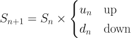
If we further assume that, every step, there is a probability \(p_n\) of an upward movement, then, in combination with what we have so far, we can generate a tree of prices over a period of time. For simplicity, let’s consider an option that expires in three days:
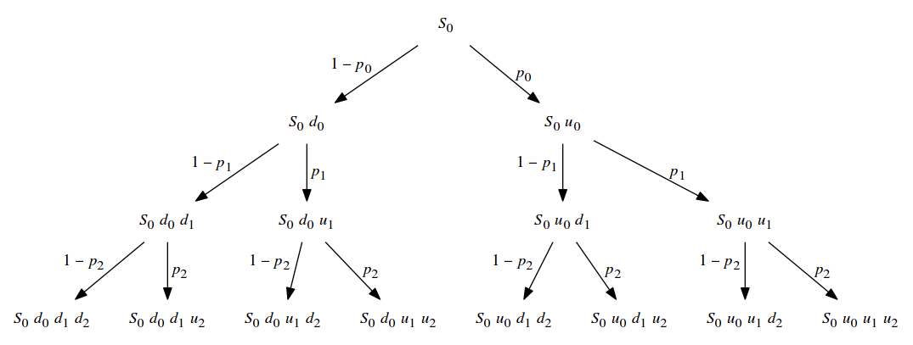
As the underlying asset’s value changes, so does the value of our call option. So, if tomorrow the underlying’s value drops, so does the option’s. At expiration, we have a choice to make: We can either exercise the option, or not. The value of the option at expiration is the discount that we achieve when we exercise, or 0 if no discount is possible. So,
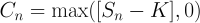
So, after a sequence of going up, then down and down, the spot price will be
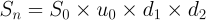
And the value of the option on that day, if events play out that way, would be determined solely by the strike price’s relationship to the spot price. But what about the day before? At that point, the future underlying value is still unknown, but we have those probabilities to guide us: we can compute an expecation of tomorrow’s value (assuming we hold), and compare it to today’s value (assuming we exercise). Using the same path in the tree, but stopping the day before expiration, the spot price is:
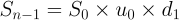
Tomorrow, the value of the option may rise or fall in accordance with the underlying’s value; applying the probability \(p_{n-1}\) of an upward movement today,
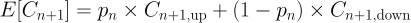
Today’s value is then:
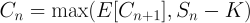
We can apply this all the way back to today to determine its fair value. There’s just one more thing to take into account: Option valuation is done in comparison with a hypothetical “risk free” investment. If you invest an initial amount of money \(P_0\) for an annual rate of \(r\) per year, then after \(t\) years your total value is given by the formula for continuous compounding:
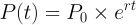
Now, suppose you were quoted the value of that investment at some point in the future \(t\); what would that mean in today’s terms? Another way to phrase this is, how much would you have to invest now to have attained that value at that point? Well, rearranging for \(P_0\),
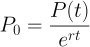
This gives the value of \(P(t)\) discounted to today by the expected return rate. Modifying our formula for today’s option value,
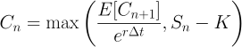
where \(\Delta t\) is the fraction of the compounding period that one day represents.
3 Implementation
We now have enough to write some code. First, we’ll model the price of the underlying asset:
from math import * class asset: def __init__(self, price, u, d, dt=1, r=1): self.price = price self.u, self.d = u, d self.dt = dt self.r = r self.p = (exp(r * dt) - self.d) / (self.u - self.d) def reprice(self, price): return asset(price, self.u, self.d, self.dt, self.r) def up(self): return self.reprice(self.price * self.u) def down(self): return self.reprice(self.price * self.d) # allow asset up/down factors stated in terms of volatility def assetv(price, vol, dt=1, r=1): u = exp(vol * sqrt(dt)) d = 1/u return asset(price, u, d, dt=dt, r=r)
And then we’ll model the option in terms of an underlying asset:
def optval(underlying, strike, t_exp, t=0, put=False): if t > t_exp: return 0 ex_call = underlying.price - strike ex_put = -ex_call exercise = ex_put if put else ex_call dt = underlying.dt C_up = optval(underlying.up(), strike, t_exp, t + dt, put) C_dn = optval(underlying.down(), strike, t_exp, t + dt, put) p = underlying.p E_C_next = p * C_up + (1 - p) * C_dn E_C_next_d = E_C_next / exp(underlying.r * dt) return max(E_C_next_d, exercise)
If we were being absolutely scrupulous about modeling concepts, we’d
create a market class to which any number of assets and options could
be added. An instance of market would set the risk free rate, and the
securities that it contains would be created with the market as context
and, thus, have access to that rate. In addition, the market’s risk free
rate could vary over time and all the securities in the market would
respond. While that level of modeling would be a great deal of fun, at
the moment it is well beyond the scope of this article.
Suppose in our ambition we want to use a scale of one trading day; there
are 252 trading days on average in one year, so dt = 1/252. How long
does it take to value an option that expires in five trading days? Ten?
Thirty? We’ll start small. First, let’s represent XYZZY:
SPOT = 45 STRIKE = 50 a = asset(SPOT, 1.01, 0.99, dt=1/252, r=0.06)
Now let’s see how long it takes to value options with different expirations in the near future:
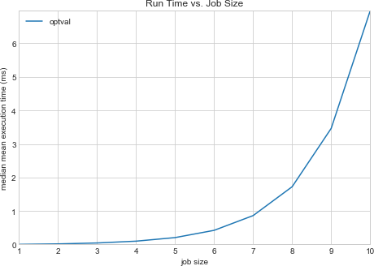
We can tell by inspection that the time complexity of our code is exponential. Extrapolating, we can estimate the time to value a thirty day option at 2.03 hours; a ninety day option we could value in 260.66 million millenia. When determining the value of an option takes longer than the option’s lifetime, something clearly has to change. We can either use a coarser evaluation interval (given considerations of numerical stability, this may not be unreasonable) or look for an algorithmic speedup. Let’s go for the algorithmic speedup.
First off, note that we used constant factors for \(u(t)\) and \(d(t)\). Because of that, it makes no difference whether the spot price moves down and then up or up and then down; indeed, the only thing that matters at all is the total number of upward and downward movements. Thus, we can collapse the internal structure of our price tree:
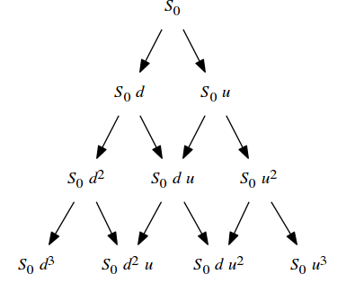
Where the probability of an upward (rightward) movement is \(p\) and that of a downward (leftward) movement is \(1−p\).
While the total number of nodes in the original price tree varied exponentially with the number of steps, the number of nodes in our new tree varies quadratically. It’s also clear that our original code is doing a fantastic amount of rework. How can we fix this? Let’s maintain a cache of the valuations at each node as we go along, and reuse them as opportunities arise; this tactic is called memoization.
cache = {} def optval2(underlying, strike, t_exp, t=0, put=False): global cache if t > t_exp: return 0 key = (t, underlying.price) if key in cache: return cache[key] ex_call = underlying.price - strike ex_put = -ex_call exercise = ex_put if put else ex_call dt = underlying.dt C_up = optval2(underlying.up(), strike, t_exp, t + dt, put) C_dn = optval2(underlying.down(), strike, t_exp, t + dt, put) p = underlying.p E_C_next = p * C_up + (1 - p) * C_dn E_C_next_d = E_C_next / exp(underlying.r * dt) cache[key] = max(E_C_next_d, exercise) return cache[key]
And memoization in this instance is a fantastic time saver:
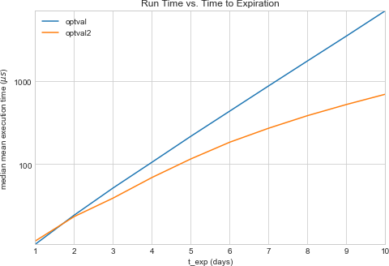
With that, we can easily determine that the value of such an option expiring in 90 days is $0.46 per share, and we can learn this in 452.76 ms.
4 Dynamic Programming
Now that we’ve achieved an impressive speedup over the original version, let’s take a step back and look at what’s going on. Firstly, the valuation problem can be decomposed into shorter-term valuation problems, and we then combine the solutions to those problems to arrive at an overall solution. When a problem can be solved recursively in this manner, we say that it has optimal substructure. This property is what led us to the original recursive solution in the first place.
Next, we made a number of simplifications (namely, holding \(u\), \(d\), and \(p\) constant over time rather than letting them vary) that, together, allowed us to collapse the tree of subproblems into the binary lattice that we saw. Whenever we see more than one path to any particular subproblem, we say that there exist overlapping subproblems; the more prevalent they are, the more benefit is to be had from caching and reusing intermediate results. In the case of our valuation problem, the number of paths into each level of the lattice grows quadratically with depth; that high degree of overlap is the source of the speedup that memoization netted us.
In a nutshell, the family of problem solving strategies revolving around reusing the intermediate results that arise from the overlapping subproblems of a problem that has optimal substructure is dynamic programming, and it finds use in such disparate domains as finance, bioinformatics, and software engineering.
The specific approach that we used, wherein a recursive solution combines results from deeper in the problem lattice, is top-down dynamic programming. While the top-down forumulation is certainly elegant, still better performance can be attained from a bottom-up iterative approach, where processing explicitly proceeds from the smallest subproblems to the next smallest and so on to the finished result, with a table or other convenient structure being used to maintain the intermediate results as they are built. In fact, when we discuss dynamic programming algorithms, it’s often the bottom up style that we have in mind. Rather than the divide-and-conquer mindset of the recursive approach, in the bottom-up version we explicitly start with the smallest parts of the problem and systematically build up to the complete solution.
For the option valuation problem, a bottom-up solution might look like:
def optval3(underlying, strike, t_exp, t=0, put=False): t_exp = int((t_exp - t) / a.dt) spot = underlying.price p = underlying.p u = underlying.u d = underlying.d # there's no value in holding past expiration C = [0 for i in range(t_exp + 2)] disc = exp(a.r * a.dt) exval_call = lambda Nu, i: spot * u**Nu * d**(i - Nu) - strike exval_put = lambda Nu, i: -exval_call(Nu, i) exval = exval_put if put else exval_call for i in range(t_exp, -1, -1): xs = (max(0, exval(Nu, i)) for Nu in range(i+1)) hs = (((1 - p) * C[i] + p * C[i + 1]) / disc for i in range(len(C) - 1)) # we only need sub-valuations one day in advance C = list(map(max, xs, hs)) return C[0]
And though the computational complexity is still quadratic, it exhibits a clear performance advantage over the memoized implementation:
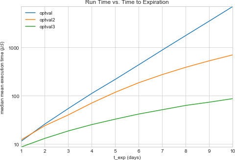
Now we can compute the 90-day option’s value in only 4.69 ms; furthermore, we can find the value of an option expiring in 180 days ($1.30) in only 16.92 ms.
5 Wrapping Up
Why does this matter? Well, for one, options serve a vital role in the world of finance, and being able to determine the fair value of an option quickly is of great practical value. More importantly for us, though, examining one way of modeling this problem in some detail led us into a powerful approach to tackling a wide array of real world problems. We’ll surely revisit dynamic programming in the near future.